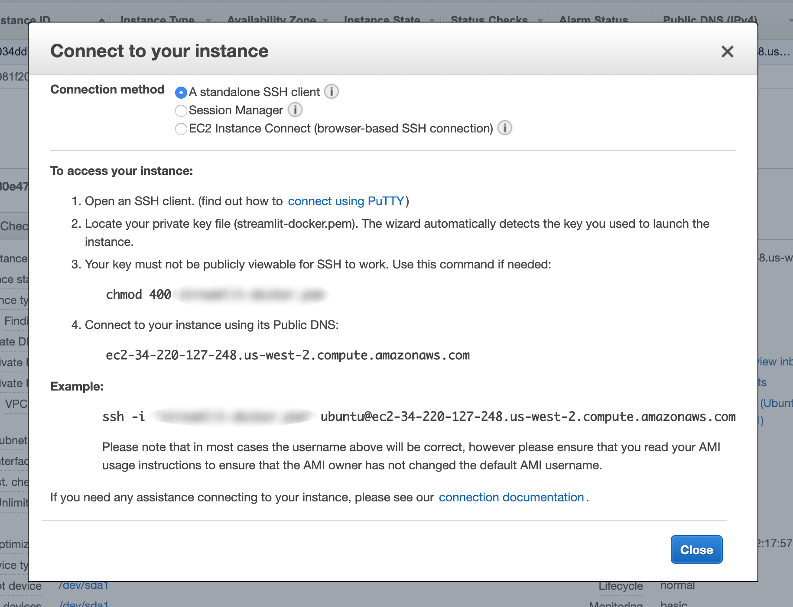

Deploying web apps with Streamlit, Docker, and AWS - part 2
Need to update description
Link to part 1 here!
Deploying your web app to the cloud with AWS
Now, we will walk through how to deploy your web app to the cloud and make it publicly available!
EC2 Set up
We’ll start by heading over to aws.amazon.com/console. If you do not yet have an account, create one! After you’re logged in, locate the Services tab in the upper left-hand corner, then select EC2.
Next, you’ll want to use the tab on the left hand-side of the console to hit Instances -> Launch Instance. This will lead you to a screen prompting you to “Choose you an Amazon Machine Image”. There are many options to choose from here, but our life will be made simplest by choosing the Deep Learning AMI (Ubuntu 16.04) AMI. Using this image does introduce a bit of unneccessary overhead, however, it gurantees us that git and Docker will be pre-installed, so it will be our choice.
look at rest of images I saved to get gist
Getting your web app in the cloud
once your instance has launched, follow the directions given here

Then clone your webapp. For example, after sshing into the instance, mine looks like
ubuntu@ip-172-31-10-243:~$ git clone https://github.com/collinprather/streamlit-docker.git
then build and run your image on the instance
cd streamlit-docker/
docker image build -t streamlit:app .
docker container run -p 8501:8501 -d streamlit:app
then, you can get your EC2 instance’s public IP address from the console, or simply type
ubuntu@ip-172-31-10-243:~/streamlit-docker$ dig +short myip.opendns.com @resolver1.opendns.com
34.220.127.248
then go to 34.220.127.248:8501 to see your app!